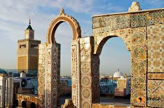

Médina de Tunis
Classée au patrimoine mondial de l'UNESCO depuis 1979, la médina de Tunis est un dédale de ruelles authentiques abritant plus de 700 monuments historiques. Avec ses souks animés, ses palais, ses mosquées et ses medersas, elle est le cœur battant de la capitale tunisienne.